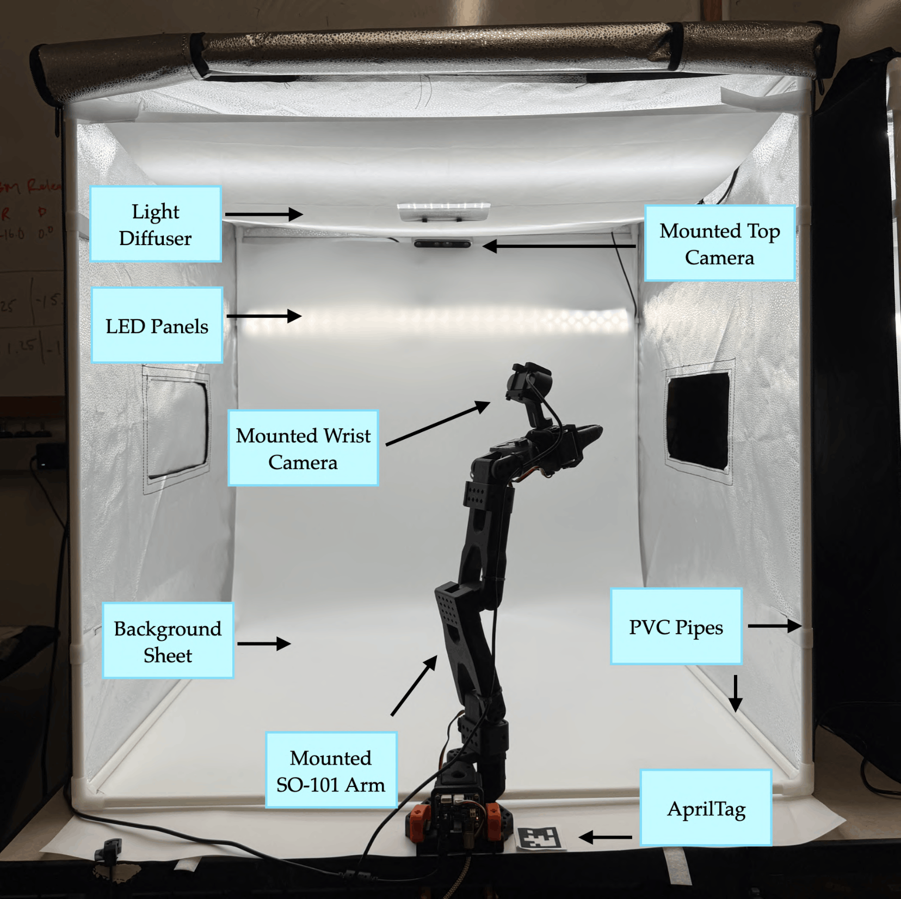

VLA-REPLICA Setup Guide
Start here
This documentation is organized into separate pages so the setup flow is easier to follow:
- Bill of materials
- Hardware assembly
- Software installation
- System Calibration
- Running evaluations
- Task reference
- Troubleshooting & checklists
Overview & prerequisites
VLA-REPLICA is a low-cost, reproducible real-world benchmark for evaluating vision-language-action policies on tabletop manipulation tasks. It uses an SO-101 follower arm, a top RealSense camera, and a wrist RGB camera inside a standardized light box setup.
- Estimated setup time: about 1 hour for the core software + calibration workflow.
- Required background: none; the guide is written for non-experts.
- System requirements: Our system utilizes an i9-10900X, 64GB RAM, and Nvidia A5000 (24GB VRAM). At least 24GB VRAM is recommended for real-time VLA inference, especially with pi0/pi0.5.

What is covered
This guide covers the full workflow from hardware assembly through policy evaluation:
- Gather the hardware and printed parts.
- Assemble the cameras, light box, and SO-101 platform.
- Install software and find device indices.
- Calibrate the arm and cameras.
- Run benchmark evaluations and compare results.
Quick notes
- Keep lighting, camera angles, and the background sheet consistent.
- Follow the calibration targets exactly before evaluating policies.
- Use the task reference and troubleshooting pages when setting up scenes.